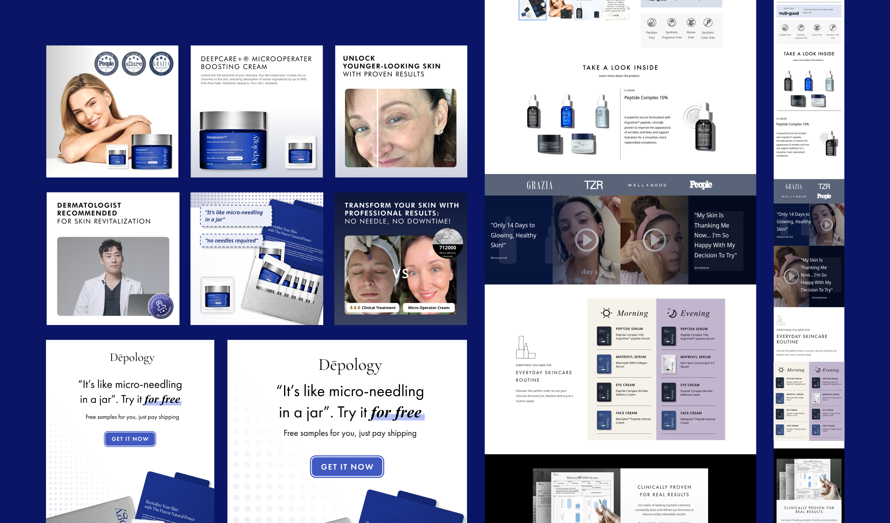
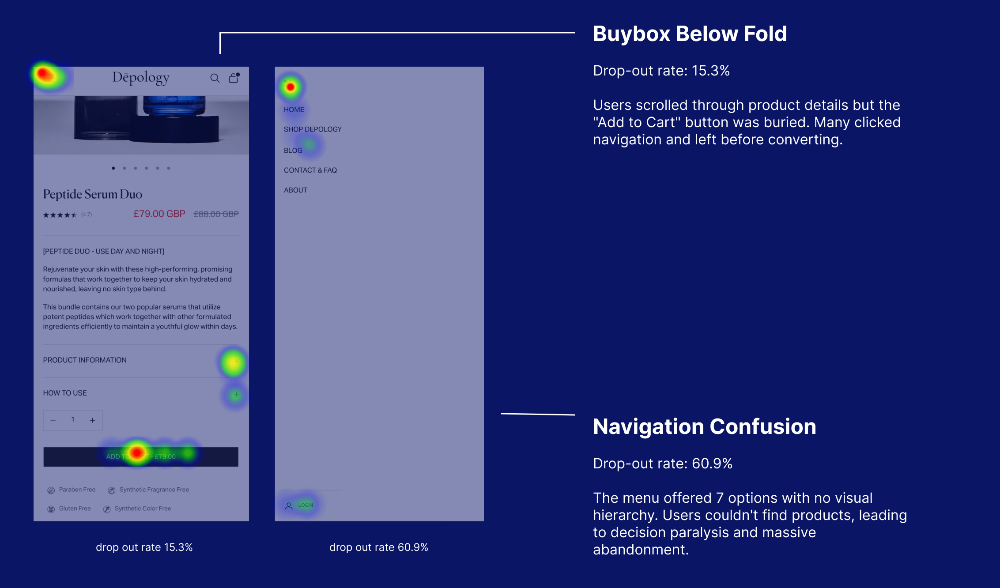
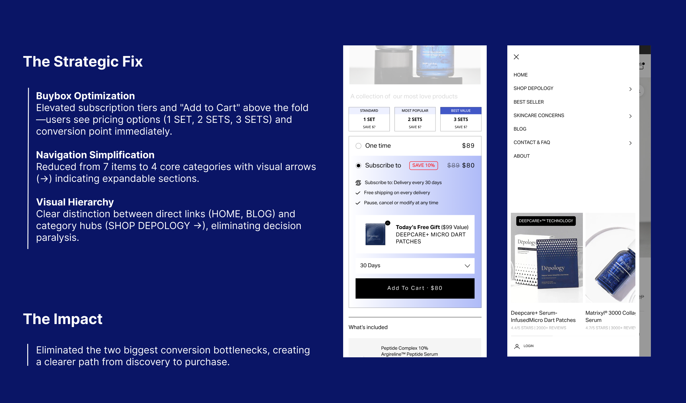
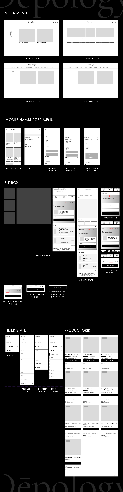
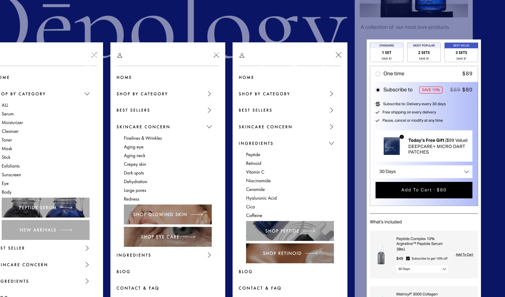
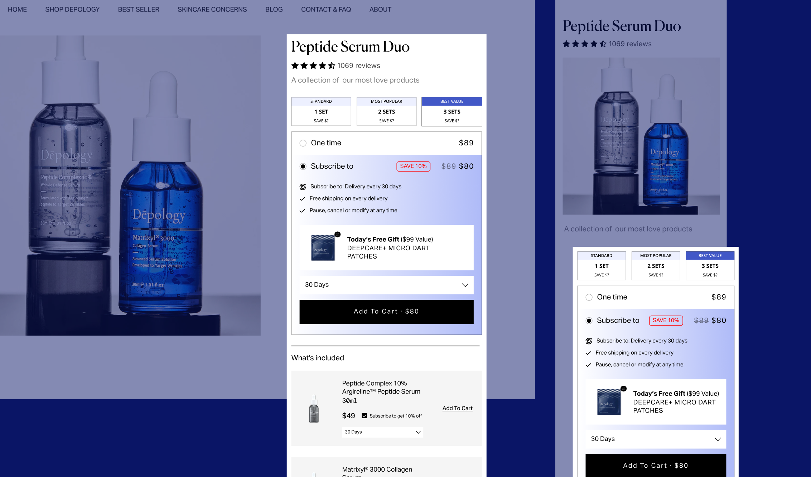
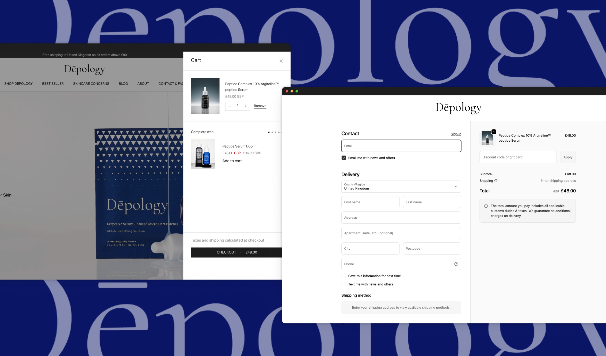
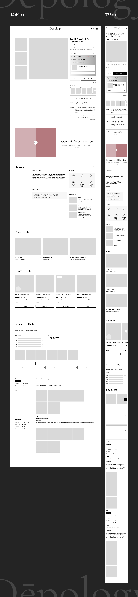

What Depology is
Depology is a Korean skincare DTC brand selling science-led beauty products to international customers. Growth depends on converting high-intent social and paid traffic into confident product decisions: users need to understand the product, compare offers, trust the claims, select the right option, and complete checkout with minimal friction.
My work focused on the product experience layer behind that growth: mobile navigation, product-page buybox behaviour, cart and checkout patterns, and the reusable UI logic needed to support faster campaign and product rollout.
- Mobile-led demand. Around 80% of users arrived on mobile, making the small-screen product journey commercially critical.
- Product-line complexity. Multiple skincare products, launch tests, offers, bundles, and incentives required reusable commerce patterns rather than one-off page fixes.
- ROAS pressure. Paid media could bring traffic, but ad promise and landing-page experience had to align to protect acquisition efficiency.

The problem was a confidence leak
Mobile users formed the majority of traffic, yet too many visitors were dropping before purchase. The issue was not simply that one page underperformed. The friction appeared across a connected commerce journey: users entered from paid social, landed on mobile product pages, opened navigation, evaluated offers, interacted with the buybox, added to cart, and moved into checkout.
The early signal was commercial. Media buying could bring traffic, but the product experience was not converting strongly enough to justify scaling spend with confidence. To create a more reliable testing loop, I first produced high-converting creative for the media buyer and helped allocate a controlled minimum test budget so the results would be meaningful rather than anecdotal.
Once traffic quality was stable enough, I used heatmaps, session recordings, cohort behaviour, and funnel data to diagnose where users hesitated, repeated actions, or abandoned the journey. The evidence pointed to three damaging patterns: navigation created cognitive load, the mobile buybox did not make the offer hierarchy clear enough, and cart/checkout patterns did not give users enough confidence to complete purchase.
Reading guide: mobile was the main stage; navigation, buybox, and checkout were the friction points; repeated hesitation became repeated revenue loss.

Diagnosis: from screens to patterns
The diagnosis moved from “which screen is underperforming?” to “which repeated decisions are users struggling to make?” I looked at how users arrived, where they paused, what they tapped, and which parts of the journey created uncertainty.
Secondary research and competitor analysis showed what skincare shoppers expected from a mobile hamburger menu: product categories, bestsellers, skin concerns, bundles, offers, and trust-building information. Depology’s menu needed to become less of an inventory list and more of a decision aid.
The buybox had a similar problem. It was carrying too much commercial weight without enough system logic. Users were not simply choosing a product. They were comparing variants, bundles, incentives, claims, delivery confidence, and perceived risk. That meant the interface needed clearer hierarchy, more deliberate states, and stronger purchase language.
This was the important shift: the solution was not a better-looking product page. The solution was a reusable commerce pattern system for the moments where customers decide whether to continue.
- Observed behaviour Users tapped navigation early, but the menu behaved like a flat list. It exposed options without helping users decide between product, concern, ingredient, or offer routes.
- User expectation Skincare shoppers usually arrive with one of four intents: find a product type, solve a skin concern, compare active ingredients, or identify bestsellers and offers quickly.
- System decision Navigation became a progressive-disclosure pattern: first-level route, expanded category, product preview, and clear return path instead of a single overloaded menu.
- Buybox insight The buybox had to carry offer logic, incentive hierarchy, subscription choice, price clarity, and CTA confidence together. Splitting those decisions across the page increased hesitation.
- Reusable rule High-intent commerce actions should keep product choice, incentive, selected state, price, and next action visible in the same decision zone, especially on mobile.

System redesign
The redesign was developed with product and engineering, not handed over as a static UI refresh. My role was to translate the research into patterns that could be built, tested, reused, and extended.

Mobile navigation

The mobile menu was redesigned around intent. Instead of exposing too many routes at once, it prioritised the paths users were most likely to need: product discovery, skin concerns, bestsellers, bundles, offers, and trust information.
Buybox variants

The buybox became the core decision component. I redesigned offer hierarchy, variant selection, bundle presentation, incentive visibility, CTA priority, and selected/disabled states so users could understand the recommended path without losing control.
Button and state language
-
Default / add to cart
Primary purchase state used when the offer is valid and the user can move forward.
-
One-time purchase
Secondary route for users who avoid subscription but still need a clear conversion path.
-
Offer + subscription selected
Selected subscription state keeps the discount, incentive, price, and CTA aligned.
-
Disabled / incomplete selection
Prevents unclear purchase attempts until required product or offer choices are complete.
-
Loading / processing
Confirms that the action is in progress and prevents repeated taps on mobile.
-
Error / recovery
Inline recovery state keeps the user in context instead of forcing them to restart.
-
Sticky CTA / with subscription
Mobile sticky state inherits the selected offer so users do not lose context while scrolling.
-
Hover / background slide
Hover state inverts the button through a white background slide, signalling interactivity without changing the purchase language.
Purchase buttons were treated as system language. Default, selected, disabled, loading, error, add-to-cart, checkout, and upsell states were clarified so the interface could respond with confidence at each decision point.
Cart, checkout, and upsell

Cart and checkout patterns focused on reassurance: summary clarity, incentive reminders, error recovery, next-step visibility, and low-friction upsell. The aim was not to push harder, but to remove avoidable doubt.
Handoff and implementation

I documented responsive behaviour, content order, state rules, implementation priorities, and QA notes for developers. The system needed to survive production, not just look coherent in Figma: the same product story had to work at 1440px and 375px without losing the buybox, offer hierarchy, or checkout confidence cues.
What would mature at enterprise scale
For a fast-moving DTC team, this system was effective: it improved conversion, reduced rework, and created reusable decision patterns. At enterprise scale, I would formalise the system further.
That would mean a clearer token taxonomy across colour, spacing, type, elevation, and motion; a full component state matrix across hover, focus, active, disabled, loading, error, and success states; accessibility annotations for keyboard navigation, focus order, contrast, screen-reader behaviour, and form error recovery; versioning and contribution workflows; design-code parity through Storybook or equivalent; and usage guidance showing when to use, adapt, or avoid each pattern.
This is the step from a strong product pattern system to governed platform infrastructure.
How this transfers to WPP scale
Depology was smaller than WPP, but the architecture problem is the same: repeated user needs have to become shared product language. At WPP scale, that means turning research signals, product requirements, accessibility rules, AI interactions, and brand expression into patterns that many teams can reuse without fragmenting the experience.
My TUTU VIEW work extends this system logic across multiple live brands with distinct identities, shared components, design tokens, and handoff SOPs. That is the useful transfer: multi-brand governance, consistency, and operational efficiency before the organisation becomes too large to correct pattern drift manually.
I have not yet shipped design systems for interactive TV or VoD surfaces. The relevant foundation I bring is surface-agnostic system architecture: tokens, component variants, state logic, documentation, AI-assisted prototyping, and research validation. The same method can be adapted across web, app, chat-like interfaces, and other platform surfaces once the interaction model and constraints are understood.
Impact
- 0x checkout conversion after the research-led funnel redesign and rollout.
- 0% reduction in cart abandonment through clearer purchase and checkout patterns.
- 0% faster design-to-build workflow through reusable components and handoff SOPs.
- 0-day tests after reducing the testing cycle from two weeks.
The impact was both commercial and operational. The redesign improved conversion, but it also helped the team move faster because navigation, buybox, cart, and checkout decisions no longer had to be solved from scratch for every launch.